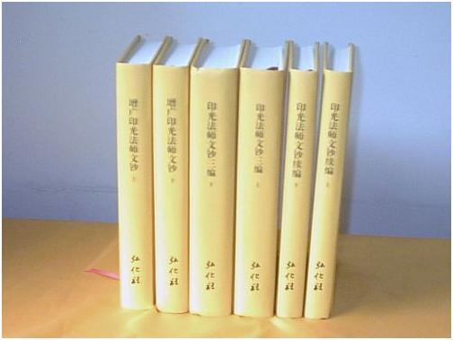
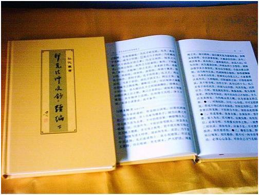
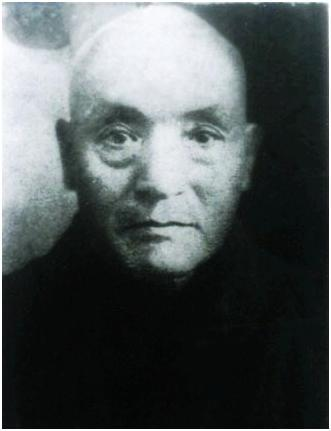
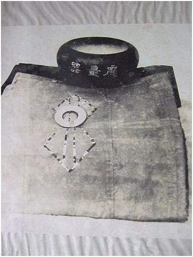

這套印光大師文鈔是蘇州弘化社新近印出來的，一套精裝六冊十分精美，免費送贈有緣。印光大師說的法對我們每個修持淨土法門的人也非常重要，我們每個人也必需精讀研究它。
在印光大師文鈔的書信裡面，我們可以看到，大師不只是研究淨土，他對其他淨土以外法理上的解答也很透徹。對現在學佛的人來說，研究印光大師文鈔的人，我想不會太多；因為現在的人喜歡神通，所以偏向學密宗比較多。
印光大師文鈔的語句雖然平白，但是裡面蘊含很高深的佛理；而且流露大師無限的悲心。印光大師不厭其煩的解答各方來信，目的就是要我們先做好一個人；人成才佛成，先做好一個人才可談到成佛。
你說印光大師有沒有神通？我清楚告訴大家，印光大師決定有神通，但是隱而不露，暗中點化有緣眾生。印光大師是西方三聖大勢至菩薩的化身，這是肯定的事情，不用疑惑；但是我們在整部文鈔當中，從來沒有看到過大師提到他是什麼佛？什麼菩薩的化身？
因為大師深深明白佛陀釋迦牟尼的教導，特別在首楞嚴經四種清淨明誨裡有關淫殺盜妄中的大妄語戒，不能“洩佛密因”；所以印光大師在文鈔中沒有提到他自己究竟是誰？
佛，不是自己口說出來希望眾生認同的，而是通過曠劫的勤苦修學而得證。真正降生人間利益眾生的佛菩薩，相反來說是唯恐人知。佛菩薩降生的目的就是為了拯救眾生，什麼身份根本不重要。
因為今日是末法時候，說穿身份只會令眾生更起貪著，生出更多煩惱。說穿身份只是想獲得由眾生執著而來的名聞利養，這對師徒雙方修行上都不是一件好事情，有損無益。佛菩薩發願再來五濁惡世縱是為了利益眾生，但自己亦要用人身重頭開始一步步踏實修學。從沒看過有一尊人間肉身的懶佛懶菩薩，所以釋迦牟尼佛都修了六年苦行。蓮師在各個山洞及屍林修頭陀密法，那洛巴大師及密勒日巴尊者所修的極大苦行更不用多說了。只有身體力行如來所傳的光明正道，以身示教，才可感化萬千，這才是真正佛菩薩降世的本懷。
身有極大正氣，愛護利益天下蒼生；縱懷經世絕學，謙恭退讓；斷淫持素，讚揚守護如來一代戒德；清貧自活，財富盡施苦難之人；為人作事，頂天立地；孝悌至誠，俯仰無愧；頂戴奉行，普賢十願；心如長江大海，能容萬物；怨親平等，同皆救度；這才是華嚴經中所說的大乘氣象，這才是肉身菩薩應有的典範行為。

印祖法相
當我看到印光大師照片的時候，有一種高山仰止的感覺；很想依止印光大師為師，傾聽他的教誨。這種心就如遊子思念家鄉、想念親人的情愫。
印光大師照片的形象散發著黃金色的光芒。金光就是佛教最高修行成就的表徵，只有阿羅漢，菩薩，和佛才會散發出金光；表明祂們都是已脫離生死，超出三界的聖者。
金光是從內證的極高道行所透射在外的表象，聖人的金光具有祥和攝化萬千的正大之氣；相反魔羅的金光則具有炫惑迷人的氛圍，絕對沒有像佛光照護眾生，如嬰在母懷的平和安全之感。這就是有諸內必盈於外的道理，猶如人的相貌一樣，「欲問其心，先觀其相。」
印光大師的照片就是空性的內證，等覺大菩薩的空性，由念佛三昧所成就的大空、真空境界。
為什麼大師的名字叫「印光」？這亦是一種安排，證明印光大師確確實實是真正大勢至菩薩的化身，其名字隱藏了玄機。因為大勢至菩薩在因地修行的時候，跟隨十二尊古佛修習念佛三昧。十二尊古佛的佛號分別為：「無量光、無邊光、無礙光、無對光、焰王光、清凈光、歡喜光、智慧光、難思光、不斷光、無稱光，和超日月光。」這十二尊古佛的佛號中都有一個「光」字。所以「印光」兩字，即是「印證念佛三昧之光」的意思。
現代人不能證得念佛三昧，主要原因是俗事酬酢過多、思想複雜，不肯「都攝六根，淨念相繼。」印光大師強調不論閒忙，行住坐臥，二六時中都要不捨一句佛號；他自己已身體力行作出一個好榜樣，這是大師文鈔中的主軸思想。
修證念佛三昧的口訣，在於先收攝六根，停止向外攀緣，以一念心向內迴光返照本有的自性。禪宗返照的方法借一句話頭，用參究的功夫使生起疑情，疑情生起為助緣再引發行者參究下去，最終有日會疑情破碎，完完全全徹見自己本來的自性真面目，這就名為開悟、明心見性。
淨土宗修法用一心念佛，不用參究；只要一句接一句、一念接一念，句句佛號，念念流入自性光明本覺大海。以一念攝萬念不斷在一切順逆環境中磨練出成熟的功夫，最後必可修成念佛三昧。

印祖的衣砵
大師的照片對眾生有無量無邊的加持。向印光大師照片行一個敬仰、一個禮拜，也可消掉我們無始劫來的種種業障。從印光大師的照片當中，看到他內在的精神，透射出無比的正氣，感覺到他已修得很高成就。無限的感恩大勢至菩薩！在民國時期來到我們這個娑婆世界五濁惡世，教化我們這些剛強頑劣的眾生。其實大勢至菩薩已經是佛，祂的證量已經和佛沒有分別。但為什麼大勢至菩薩仍然處在等覺菩薩的位置？因為他要輔助阿彌陀佛教化極樂世界的眾生，所以大勢至菩薩故意留下一絲無明不把它破掉，佛學上名為「留惑潤生」，這是等覺菩薩成佛以前最後的一分無明。
這一品無明稱為元品無明、也叫無始無明或生相無明。如果把這最後一分無明破掉，就會進入佛陀的大般涅槃，到達佛陀真空妙有的境界，就會得到佛陀的一切智。
大勢至菩薩的功德力量可以舉步震動十方法界，救度眾生有大勢力，所以稱作大勢至。民國時候的印光大師，就是大勢至菩薩千千萬萬分身當中的其中一個，來弘揚淨土法門，將淨土宗的思想用當時較淺白的語言重講一遍。
我強調每個修行人都來學習印光大師文鈔，因為大師的言教可大大鞏固我們對往生淨土的信心。我強調當大家在修行遇到疑難的時候，都來參看文鈔，看看能否找到滿意的答案？
我自己看文鈔的時候，好像是大師面對面跟我說法的感覺；每當我有問題要解決的時候，先參考文鈔，看看印光大師對這個問題是什麼看法。我研究印光大師文鈔，受益很多很深。
印光大師出生的時候他的眼睛有病，有些人不明白，大菩薩來教化眾生，為什麼自己還有病啊？印光大師眼睛的病和他個人的業障是無關的，這個病是大師還沒有來人間的時候已經安排好。這個病的目的就是要大師感到這個娑婆世界是苦，要他來到這裡後快快醒來，有些疾病跟我們的業障其實是無關的，是佛菩薩給我們的考驗，通過這些考驗讓我們的心靈成長起來。沒有病不能刺激我們修行的力度，沒有病不能更快讓我們從欲望當中覺醒。
印光大師在年輕的時候辟佛，為什麼菩薩來教化眾生，還按相反的方向辟佛？這是什麼理論？這個辟佛的行為是一種安排，更好讓大師更快從靈性當中覺醒。
後來大師知道自己辟佛是錯，這樣才會讓他對佛菩薩更有感恩的心，這樣才會使大師更全心全力去弘揚佛法，這是一種來自懺悔與感恩心的大動力。所以請不要懷疑在大菩薩身上發生的一切事情，它一定有原因，也不能像普通凡夫的因果去加以詮釋。
大菩薩來這個世間也要學習，所以印光大師閉關去參研藏經，這也是對普通凡夫的一個示現，佛法要從精勤修習才會得到美好的成果。
印光大師已經證得念佛三昧。他證得念佛三昧的因是由於本身是大菩薩的再來，助緣就是他二六時中不間斷的念佛。印光大師的思想是強調時時刻刻都在念佛，教導我們無論閒忙心中都要念佛。如果我們對阿彌陀佛有深切的信願，只念一句阿彌陀佛，已經足以令我們明心見性，證得念佛三昧，臨終往生西方極樂世界了脫生死。所以說彌陀佛，大願王，慈悲喜捨難量！假如沒有阿彌陀佛極樂世界的法門，當今末法要靠我們自己修持的力量來解脫生死，希望簡直是微乎其微。無限感恩阿彌陀佛！無限感恩觀世音菩薩！無限感恩大勢至菩薩！
菩薩好像離我們很遠，其實也只是近在咫尺，最重要看我們的發心和緣分。發心真、緣分足，我們就可以遇見真正的在世菩薩。
短暫的人生，很多事情會令我們執著，放不下、看不開；其實細心來分析，這只不過是一種虛幻感覺的困縛。如果心中不取著這些苦樂感受，即是六根接觸六塵的一剎不為所動、不入心中，心如明鏡，那就灑脫自在了。但我們凡夫不可能不取著、不動念，那就正好用一句佛號來取代一切邪思雜想吧！我們凡夫每日念頭沒有一刻停息，這亦正是為什麼印光大師主張二六時中都要不斷念佛的原因。
不斷念佛，就是以佛心來取締我們的凡心；有朝一日圓滿取締成功，全心是佛，全佛是心，心佛眾生三無差別的境界，就是我們即身成佛的時候了。所以說念佛一門是無上深妙禪，是無上大密宗。禪宗的明心見性，見性成佛，密宗的無上瑜伽，紅教大圓滿，白教大手印，黃教的大威德金剛、時輪金剛，花教的大圓勝慧，最後證得的極空真空境界，與念佛證得的根本空性完全沒有兩樣。
西藏密宗寧瑪派的九乘次第判攝，唐密屬下三部的瑜伽密，要用手印及觀想來配合修法。日本東密源於唐朝密宗，東密空海大師的即身成佛口訣：「六大無礙常瑜伽，四種曼荼各不離；三密加持速疾顯，重重帝網名即身。」三密加持就是身密我們結本尊手印，語密念誦本尊真言，意密觀想本尊及梵字，不斷持之以恆去修，本尊就會加持轉化掉我們有漏的身心，最後證得與本尊一樣的清淨境界。
手印及觀想固然有它特殊的效用，可用來施展密宗的息災、增益、懷愛、鉤召、降伏、誅滅等種種方便利益眾生的法門，但真正的大密宗不必再用手印及觀想，而是更高的一個層次，就是用心念成就一切，只要一個念，就可行使一切密法。所以真正的密宗為什麼那麼強調菩提心戒、三昧耶戒及菩薩戒的守持；因為立因不正、用心不正，到頭修法不成反害了自己。菩薩戒的守持就是講心法，舉心動念都要合於規範。
唐密的本尊瑜伽入我我入，行者與本尊合一；其實淨土宗念一句阿彌陀佛，心就立刻與佛合一了，其快無比，不需結什麼手印，亦不用什麼觀想，只要一念心無間斷念下去就是了，亦決定得到本尊阿彌陀佛的大加持。
以末學個人來說，雖然修習眾多密法，但都只是為了方便眾生；若論本參，自知肉質凡軀、根淺障深，還是以一句佛號念到底，一心求生西方極樂世界，仗佛接引，即生解脫生死來得穩當。
就讓我們一起來依止印光大師為師吧！
印光大師文鈔字字珠璣、句句精華，學佛人不可不讀；印光大師文鈔更是大勢至菩薩的以身示教，永遠不會過時。
感動塵寰修苦行 精嚴戒律化人天
青鬢銀絲換歲年 娑婆成就幾辛酸
血是菩提骨是樹 一瓣心香布祗園
捨身奉佛得成全 華嚴氣象蓋三千
淘盡我情賢劫後 生生大誓再歸旋
戊子年七月十三日大勢至菩薩聖誕